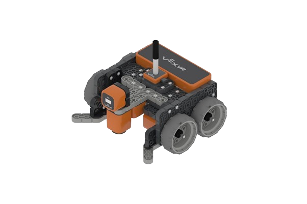

سؤال 1 من 15
الرصيد: 0
جاري تحميل التحدي...
انتهى التحدي!
نتيجتك النهائية:
0
من 15
💡
تنبيه هام من المعلم:
هذه اللعبة مصممة لمراجعة معلوماتك وتثبيتها بمتعة، ولكنها
لا تغني أبداً عن مراجعة أوراق العمل والمذكرة الأساسية للمنهج
. تأكد من مذاكرة مصادرك جيداً للاستعداد للاختبارات!
إعادة التحدي 🔄